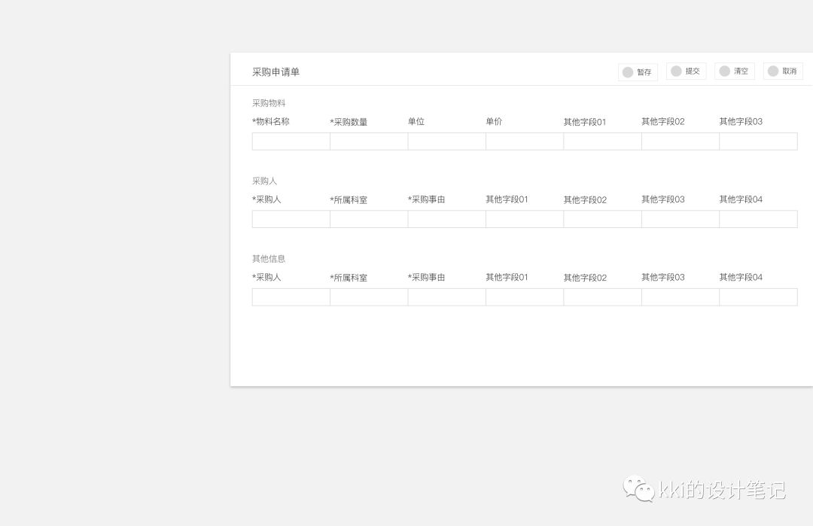
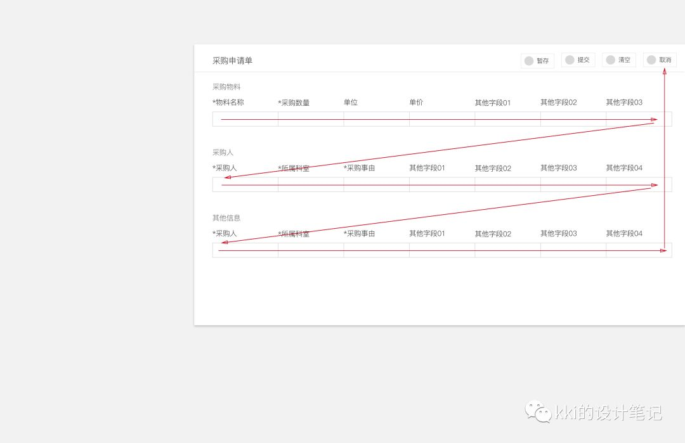
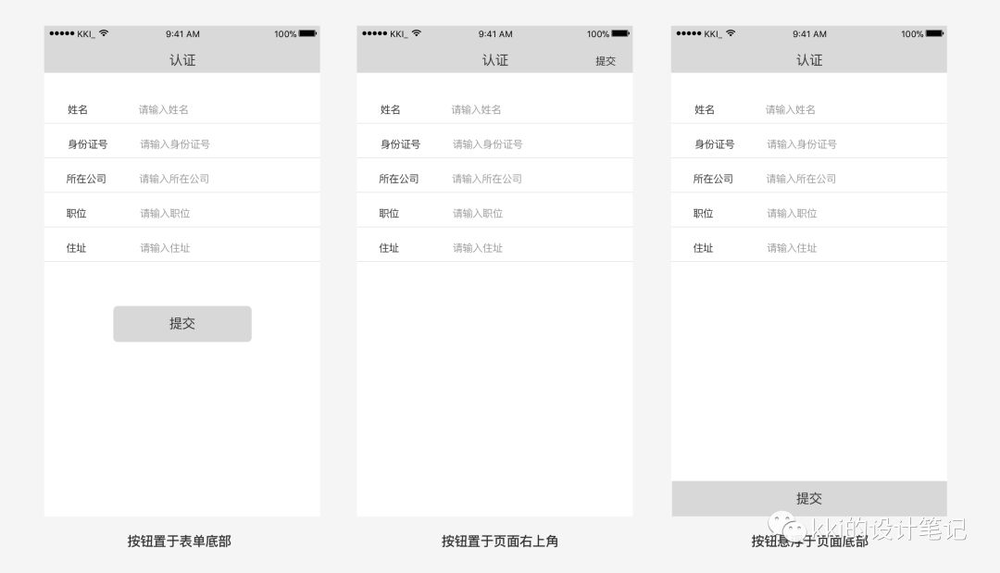
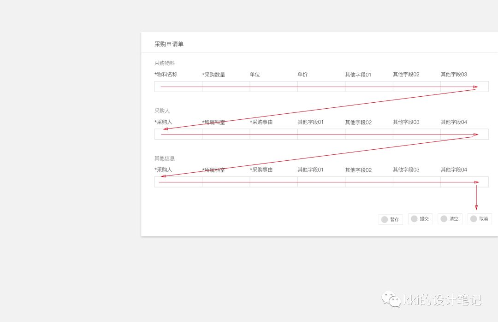
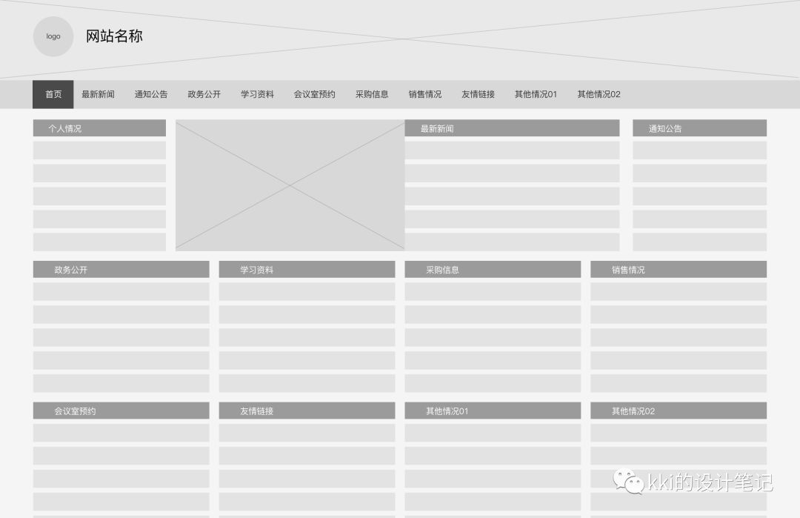

前两天参加了两场面试，面试官都很nice，也很专业，所以我自己也是受益匪浅。 这两天趁着面试的记忆还新鲜，赶紧把这两场面试的感受写下来。
主要内容如下：
针对web端产品设计
1. 不得不考虑的物理设备特性；
2. 更加重要的信息分类与整合；
通用类设计
3. 竞品分析的目的与意义；
4. 如何做需求分析。
正文
我面试的第一家公司是做企业办公产品的，他们的产品主要在web端，所以在面试中，面试官对我的主要考察点集中在关于web端产品的思考上。
但是说实话，我自己这几年有百分之九十的时间都是在做手机APP的设计，web端的产品还真没有经历很多。但我也并不会因此心生畏惧或者 觉得自己做不了web端产品的设计。
『设计的道理是相通的，设计的方法也是通用的』，这个也是我想分享给大家的一个想法，碰到自己陌生的 产品或领域不要慌张，只要我们平时有思考有积累，足以支撑我们面对新的挑战。
面试中，面试官给了我一台MacBook，让我体验他们的产品并且提一些自己的看法。其中大概有这样一个表单填写，如下图：

填写整个表单，用户的视线流和操作路径如下图所示：

其它细节问题我们不细说，主要讨论按钮摆放位置。
其实表单填写中按钮的摆放在手机APP的设计中也是一个经常会被讨论到的问题，常见的处理方法有下面3种：

此处不讨论这三种方案的优劣和适用场景，只想说明一点，限于手机屏幕的尺寸，以上三种方案的确会给用户体验造成差异，但是影响却比不 上web端。
就拿第二种方案来说，在手机上将按钮置于顶部，操作起来也确实不便，但是手机屏幕毕竟尺寸有限，手指稍稍努力一下，还是很容易达成 目的的。但是在web端情况就不一样了。
上周我花了几天的时间在家里用MacBook做作品集，全程基本没有使用鼠标，虽然苹果的触控板很灵活，三指拖动很好用，但是一段时间做 下来，手还是很酸痛。这也是我一直强调是苹果电脑的原因，我还有一台windows的笔记本，那个触控板，长时间用起来更费力。
我在体验产品时，把自己当做用户，去完成整个表单的填写和提交，在进行提交操作时，就发现用触控板操作光标移动这么大段的距离，是相 当费劲的，即使使用鼠标也是一个很大的操作成本。再进一步想，如果一个用户在一个时间段内要创建大量的表单，这种操作对用户来说就更 加不友好了。所以当时我提出来，操作按钮放在表单的底部，无论在感知上，还是操作上，对用户来说都会更加友好。

通过这个栗子，我认识到，我们在进行web端产品设计时，要更加考虑用户的操作设备和特有的操作方式，比如用户设备的屏幕尺寸，比如用 户是否移动办公等等。
还有另一点感想是，作为设计师，一定一定要经常使用自己的产品，而且要在不同的场景下使用，这样才能更 加贴近用户，发现很多设计时没有考虑到的问题。
为什么这么说呢？还是要说到移动设备和pc设备的屏幕尺寸问题。
由于移动设备尺寸有限，所以我们在进行移动产品设计时的一个要点就是『一个页面尽量只告诉用户一件事』，但是在pc端产 品中这个要点经常会被各方挑战。由于pc端尺寸较大，所以一屏页面往往承载了更多内容，甚至有的时候，我们“可爱的”领导希望一屏内容能 放下所有东西。比如下面的页面：

面试时看到的网站我现在也是找不到了，只能凭借记忆画了一个大概的，基本上是上图中这种情况：首屏中恨不能将全站的内容都做展示。
第一眼给人的感受就是内容很多，非常多！
我们似乎总有一种错觉， 『用户需要的很多，我们给的越多他们越开心』。事实上真是这样吗？我看未必。 每个人的精力有限，关注的内容其实是非常聚焦的。你不妨会想一下，你每天用的最多的产品是不是就那么几款，而且每款产品用到的功能、 关注的内容也只是整个产品的一小部分。
所以我们要做的是帮助用户在庞杂的内容中将重要的内容、用户关心的内容提炼出来然后突出展示，将不那么重要的或用户很少关注的内容 或转移或隐藏，这里可以参考《简约至少：交互设计四策略》中的4个原则：『删除』、『组织』、『隐藏』、 『转移』。将所有内容无重点、无主次一股脑地丢给用户，在我看来是一种及其不负责的表现，也说明产品设计者本身对内容不够 了解，无所谓主次。
这里不对页面改版做详细的讨论，展开说的话可以写好几篇文章了。
这是在微众银行面试时面试官的问题。
第一点是指我们的产品要符合各自所在平台的规范，包括相关组件的使用方式和适用场景、各自平台的交互方式等。
第二点是指用户对于特定产品都有一套相对稳定的使用习惯，我们在进行产品设计之前有必要做到心中有数，否则很有可能在不知不觉中 挑战了用户的习惯。
我最近在看一本书—《上瘾》，书中有一个观点，挑战用户的习惯往往会带来失败。比如说我们做证券APP的设计，股民都习惯了某一种交易 流程，我们如果不做调研不考虑用户的习惯进行盲目的创新，很大的概率会面临产品的失败。
第三点是指当我们在做产品设计的时候针对某一个设计方案，可以通过竞品分析了解方案的可行性或者实现成本，做到心中有数。也可以避免 当我们的方案被技术以不能实现或实现难度较大挑战时，我们自己先乱了阵脚
当时我阐述了自己的看法，面试官说他觉得第二点是最重要的，至于第三点，我们不必太过在意。毕竟有时创新是需要付出一定代价的。
以上是从交互层面阐述的竞品分析的目的和意义。如果从产品层面，竞品分析还可以帮助我们发现机会点、寻找新市场、确定产品定位等。
还是微众银行的面试。
当时被问到“你怎样做需求分析”。我的回答是：我们要洞悉需求背后的真实意图，了解需求的本质，将用户需求转化为产品需求。（回答的 比较泛泛啦）
然后又被问到一个具体的栗子：“如果接到一个在现有广场中增加收藏动态的功能，你怎么解决？“
当时我的思路过于简单和绝对化：要么做，要么不做。
我说了自己的想法后，面试官说我刚开始分析的思路是对的，但是后面的结论并没有解决问题。
说回这个例子，即使收藏的功能使用场景并不多，但是我们简单的否定掉，依然会损害某些场景下的用户体验。
我们转换一个思路：
用户收藏某内容，肯定是内容对用户有触动，那么用户是否会产生和内容的互动，比如点赞、评论或者转发；而用户收藏的目的是方便未来
查看，用户的真实目的不是收藏，而是想在未来快速查看。如果用户可以查看自己评论过或者赞过的内容，是不是就可以满足收藏的目的？在
这个思路中，其实是将收藏的需求转化为其他的需求，但是同样解决了用户的需求。
以上是面试官和我分享的他的思路。
今天我去继续思考这个例子时，用户除了可以查看已评论或已点赞的内容，是不是也可以通过查看历史浏览记录快速查看过往内容？当然，这 只是一个思路。
经过思路的转换，我们对待一个新需求就不是“做或不做”的问题，而是要去考虑如何满足用户的需求。所以，下次再去分析一个需求能不能做 的时候，千万不能仅仅止于“能做或不能做”，如果不能做，有没有更好的方案去满足用户的需求呢？
以上是我这两场面试的一些思考和感悟，都是很零散的点，记录下来，留待未来的工作中慢慢去串联和完善。
一些小小的思考，与君共享。